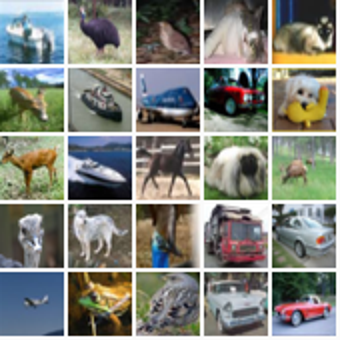
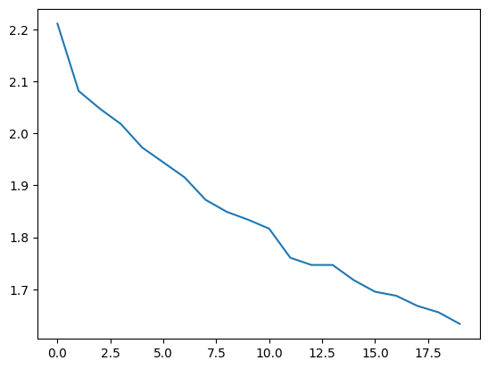
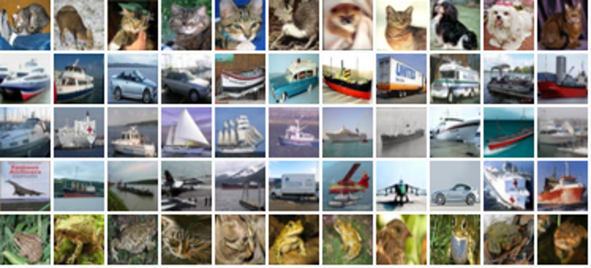
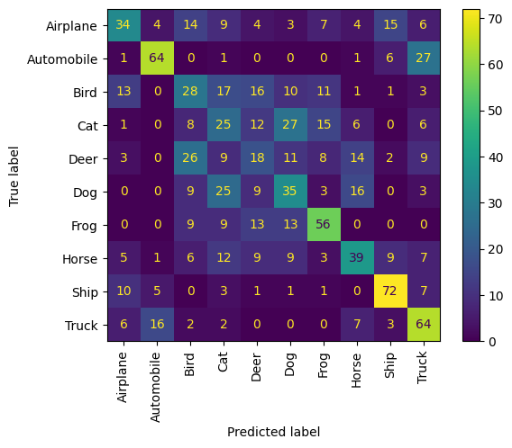

Metric learning for image similarity search
Author: Mat Kelcey
Date created: 2020/06/05
Last modified: 2020/06/09
Description: Example of using similarity metric learning on CIFAR-10 images.

Overview
Metric learning aims to train models that can embed inputs into a high-dimensional space such that "similar" inputs, as defined by the training scheme, are located close to each other. These models once trained can produce embeddings for downstream systems where such similarity is useful; examples include as a ranking signal for search or as a form of pretrained embedding model for another supervised problem.
For a more detailed overview of metric learning see:
Setup
Set Keras backend to tensorflow.
import os
os.environ["KERAS_BACKEND"] = "tensorflow"
import random
import matplotlib.pyplot as plt
import numpy as np
import tensorflow as tf
from collections import defaultdict
from PIL import Image
from sklearn.metrics import ConfusionMatrixDisplay
import keras
from keras import layers
Dataset
For this example we will be using the CIFAR-10 dataset.
from keras.datasets import cifar10
(x_train, y_train), (x_test, y_test) = cifar10.load_data()
x_train = x_train.astype("float32") / 255.0
y_train = np.squeeze(y_train)
x_test = x_test.astype("float32") / 255.0
y_test = np.squeeze(y_test)
To get a sense of the dataset we can visualise a grid of 25 random examples.
height_width = 32
def show_collage(examples):
box_size = height_width + 2
num_rows, num_cols = examples.shape[:2]
collage = Image.new(
mode="RGB",
size=(num_cols * box_size, num_rows * box_size),
color=(250, 250, 250),
)
for row_idx in range(num_rows):
for col_idx in range(num_cols):
array = (np.array(examples[row_idx, col_idx]) * 255).astype(np.uint8)
collage.paste(
Image.fromarray(array), (col_idx * box_size, row_idx * box_size)
)
# Double size for visualisation.
collage = collage.resize((2 * num_cols * box_size, 2 * num_rows * box_size))
return collage
# Show a collage of 5x5 random images.
sample_idxs = np.random.randint(0, 50000, size=(5, 5))
examples = x_train[sample_idxs]
show_collage(examples)

Metric learning provides training data not as explicit (X, y) pairs but instead uses
multiple instances that are related in the way we want to express similarity. In our
example we will use instances of the same class to represent similarity; a single
training instance will not be one image, but a pair of images of the same class. When
referring to the images in this pair we'll use the common metric learning names of the
anchor (a randomly chosen image) and the positive (another randomly chosen image of
the same class).
To facilitate this we need to build a form of lookup that maps from classes to the instances of that class. When generating data for training we will sample from this lookup.
class_idx_to_train_idxs = defaultdict(list)
for y_train_idx, y in enumerate(y_train):
class_idx_to_train_idxs[y].append(y_train_idx)
class_idx_to_test_idxs = defaultdict(list)
for y_test_idx, y in enumerate(y_test):
class_idx_to_test_idxs[y].append(y_test_idx)
For this example we are using the simplest approach to training; a batch will consist of
(anchor, positive) pairs spread across the classes. The goal of learning will be to
move the anchor and positive pairs closer together and further away from other instances
in the batch. In this case the batch size will be dictated by the number of classes; for
CIFAR-10 this is 10.
num_classes = 10
class AnchorPositivePairs(keras.utils.Sequence):
def __init__(self, num_batches):
super().__init__()
self.num_batches = num_batches
def __len__(self):
return self.num_batches
def __getitem__(self, _idx):
x = np.empty((2, num_classes, height_width, height_width, 3), dtype=np.float32)
for class_idx in range(num_classes):
examples_for_class = class_idx_to_train_idxs[class_idx]
anchor_idx = random.choice(examples_for_class)
positive_idx = random.choice(examples_for_class)
while positive_idx == anchor_idx:
positive_idx = random.choice(examples_for_class)
x[0, class_idx] = x_train[anchor_idx]
x[1, class_idx] = x_train[positive_idx]
return x
We can visualise a batch in another collage. The top row shows randomly chosen anchors from the 10 classes, the bottom row shows the corresponding 10 positives.
examples = next(iter(AnchorPositivePairs(num_batches=1)))
show_collage(examples)
Embedding model
We define a custom model with a train_step that first embeds both anchors and positives
and then uses their pairwise dot products as logits for a softmax.
class EmbeddingModel(keras.Model):
def train_step(self, data):
# Note: Workaround for open issue, to be removed.
if isinstance(data, tuple):
data = data[0]
anchors, positives = data[0], data[1]
with tf.GradientTape() as tape:
# Run both anchors and positives through model.
anchor_embeddings = self(anchors, training=True)
positive_embeddings = self(positives, training=True)
# Calculate cosine similarity between anchors and positives. As they have
# been normalised this is just the pair wise dot products.
similarities = keras.ops.einsum(
"ae,pe->ap", anchor_embeddings, positive_embeddings
)
# Since we intend to use these as logits we scale them by a temperature.
# This value would normally be chosen as a hyper parameter.
temperature = 0.2
similarities /= temperature
# We use these similarities as logits for a softmax. The labels for
# this call are just the sequence [0, 1, 2, ..., num_classes] since we
# want the main diagonal values, which correspond to the anchor/positive
# pairs, to be high. This loss will move embeddings for the
# anchor/positive pairs together and move all other pairs apart.
sparse_labels = keras.ops.arange(num_classes)
loss = self.compute_loss(y=sparse_labels, y_pred=similarities)
# Calculate gradients and apply via optimizer.
gradients = tape.gradient(loss, self.trainable_variables)
self.optimizer.apply_gradients(zip(gradients, self.trainable_variables))
# Update and return metrics (specifically the one for the loss value).
for metric in self.metrics:
# Calling `self.compile` will by default add a [`keras.metrics.Mean`](/api/metrics/metrics_wrappers#mean-class) loss
if metric.name == "loss":
metric.update_state(loss)
else:
metric.update_state(sparse_labels, similarities)
return {m.name: m.result() for m in self.metrics}
Next we describe the architecture that maps from an image to an embedding. This model simply consists of a sequence of 2d convolutions followed by global pooling with a final linear projection to an embedding space. As is common in metric learning we normalise the embeddings so that we can use simple dot products to measure similarity. For simplicity this model is intentionally small.
inputs = layers.Input(shape=(height_width, height_width, 3))
x = layers.Conv2D(filters=32, kernel_size=3, strides=2, activation="relu")(inputs)
x = layers.Conv2D(filters=64, kernel_size=3, strides=2, activation="relu")(x)
x = layers.Conv2D(filters=128, kernel_size=3, strides=2, activation="relu")(x)
x = layers.GlobalAveragePooling2D()(x)
embeddings = layers.Dense(units=8, activation=None)(x)
embeddings = layers.UnitNormalization()(embeddings)
model = EmbeddingModel(inputs, embeddings)
Finally we run the training. On a Google Colab GPU instance this takes about a minute.
model.compile(
optimizer=keras.optimizers.Adam(learning_rate=1e-3),
loss=keras.losses.SparseCategoricalCrossentropy(from_logits=True),
)
history = model.fit(AnchorPositivePairs(num_batches=1000), epochs=20)
plt.plot(history.history["loss"])
plt.show()
Epoch 1/20
77/1000 ━[37m━━━━━━━━━━━━━━━━━━━ 1s 2ms/step - loss: 2.2962
WARNING: All log messages before absl::InitializeLog() is called are written to STDERR
I0000 00:00:1700589927.295343 3724442 device_compiler.h:187] Compiled cluster using XLA! This line is logged at most once for the lifetime of the process.
1000/1000 ━━━━━━━━━━━━━━━━━━━━ 6s 2ms/step - loss: 2.2504
Epoch 2/20
1000/1000 ━━━━━━━━━━━━━━━━━━━━ 2s 2ms/step - loss: 2.1068
Epoch 3/20
1000/1000 ━━━━━━━━━━━━━━━━━━━━ 2s 2ms/step - loss: 2.0646
Epoch 4/20
1000/1000 ━━━━━━━━━━━━━━━━━━━━ 2s 2ms/step - loss: 2.0210
Epoch 5/20
1000/1000 ━━━━━━━━━━━━━━━━━━━━ 2s 2ms/step - loss: 1.9857
Epoch 6/20
1000/1000 ━━━━━━━━━━━━━━━━━━━━ 2s 2ms/step - loss: 1.9543
Epoch 7/20
1000/1000 ━━━━━━━━━━━━━━━━━━━━ 2s 2ms/step - loss: 1.9175
Epoch 8/20
1000/1000 ━━━━━━━━━━━━━━━━━━━━ 2s 2ms/step - loss: 1.8740
Epoch 9/20
1000/1000 ━━━━━━━━━━━━━━━━━━━━ 2s 2ms/step - loss: 1.8474
Epoch 10/20
1000/1000 ━━━━━━━━━━━━━━━━━━━━ 2s 2ms/step - loss: 1.8380
Epoch 11/20
1000/1000 ━━━━━━━━━━━━━━━━━━━━ 2s 2ms/step - loss: 1.8146
Epoch 12/20
1000/1000 ━━━━━━━━━━━━━━━━━━━━ 2s 2ms/step - loss: 1.7658
Epoch 13/20
1000/1000 ━━━━━━━━━━━━━━━━━━━━ 2s 2ms/step - loss: 1.7512
Epoch 14/20
1000/1000 ━━━━━━━━━━━━━━━━━━━━ 2s 2ms/step - loss: 1.7671
Epoch 15/20
1000/1000 ━━━━━━━━━━━━━━━━━━━━ 2s 2ms/step - loss: 1.7245
Epoch 16/20
1000/1000 ━━━━━━━━━━━━━━━━━━━━ 2s 2ms/step - loss: 1.7001
Epoch 17/20
1000/1000 ━━━━━━━━━━━━━━━━━━━━ 2s 2ms/step - loss: 1.7099
Epoch 18/20
1000/1000 ━━━━━━━━━━━━━━━━━━━━ 2s 2ms/step - loss: 1.6775
Epoch 19/20
1000/1000 ━━━━━━━━━━━━━━━━━━━━ 2s 2ms/step - loss: 1.6547
Epoch 20/20
1000/1000 ━━━━━━━━━━━━━━━━━━━━ 2s 2ms/step - loss: 1.6356

Testing
We can review the quality of this model by applying it to the test set and considering near neighbours in the embedding space.
First we embed the test set and calculate all near neighbours. Recall that since the embeddings are unit length we can calculate cosine similarity via dot products.
near_neighbours_per_example = 10
embeddings = model.predict(x_test)
gram_matrix = np.einsum("ae,be->ab", embeddings, embeddings)
near_neighbours = np.argsort(gram_matrix.T)[:, -(near_neighbours_per_example + 1) :]
313/313 ━━━━━━━━━━━━━━━━━━━━ 1s 3ms/step
As a visual check of these embeddings we can build a collage of the near neighbours for 5 random examples. The first column of the image below is a randomly selected image, the following 10 columns show the nearest neighbours in order of similarity.
num_collage_examples = 5
examples = np.empty(
(
num_collage_examples,
near_neighbours_per_example + 1,
height_width,
height_width,
3,
),
dtype=np.float32,
)
for row_idx in range(num_collage_examples):
examples[row_idx, 0] = x_test[row_idx]
anchor_near_neighbours = reversed(near_neighbours[row_idx][:-1])
for col_idx, nn_idx in enumerate(anchor_near_neighbours):
examples[row_idx, col_idx + 1] = x_test[nn_idx]
show_collage(examples)

We can also get a quantified view of the performance by considering the correctness of near neighbours in terms of a confusion matrix.
Let us sample 10 examples from each of the 10 classes and consider their near neighbours as a form of prediction; that is, does the example and its near neighbours share the same class?
We observe that each animal class does generally well, and is confused the most with the other animal classes. The vehicle classes follow the same pattern.
confusion_matrix = np.zeros((num_classes, num_classes))
# For each class.
for class_idx in range(num_classes):
# Consider 10 examples.
example_idxs = class_idx_to_test_idxs[class_idx][:10]
for y_test_idx in example_idxs:
# And count the classes of its near neighbours.
for nn_idx in near_neighbours[y_test_idx][:-1]:
nn_class_idx = y_test[nn_idx]
confusion_matrix[class_idx, nn_class_idx] += 1
# Display a confusion matrix.
labels = [
"Airplane",
"Automobile",
"Bird",
"Cat",
"Deer",
"Dog",
"Frog",
"Horse",
"Ship",
"Truck",
]
disp = ConfusionMatrixDisplay(confusion_matrix=confusion_matrix, display_labels=labels)
disp.plot(include_values=True, cmap="viridis", ax=None, xticks_rotation="vertical")
plt.show()
